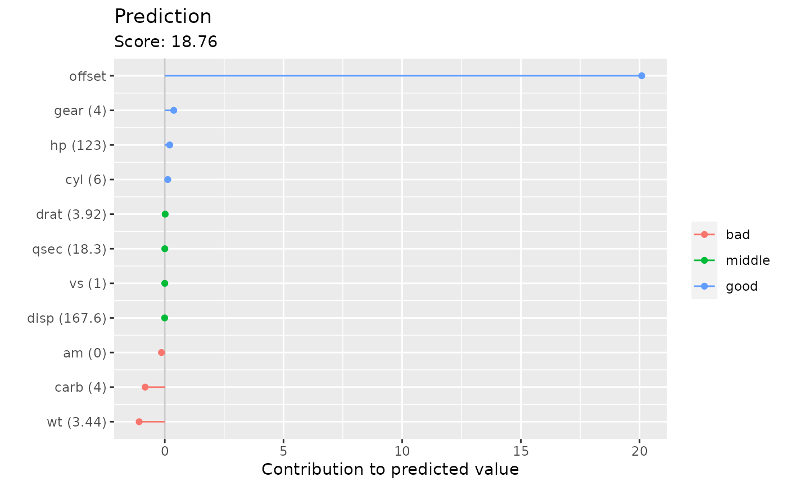

Decompose the predicted value based on the given features
plotIndividualContribution.RdThis function visualizes the contribution of each feature regarding the predicted value.
By default, multiple base learners defined on one feature are aggregated. If you
want to show the contribution of single base learner, then set aggregate = FALSE.
plotIndividualContribution( cboost, newdata, aggregate = TRUE, colbreaks = c(-Inf, 0, Inf), collabels = c("negative", "positive"), nround = 2L, offset = TRUE )
Arguments
| cboost | [ |
|---|---|
| newdata | [ |
| aggregate | [ |
| colbreaks | [ |
| collabels | [ |
| nround | [ |
| offset | [ |
Value
ggplot object containing the graphic.
Examples
dat = mtcars fnum = c("cyl", "disp", "hp", "drat", "wt", "qsec") fcat = c("vs", "am", "gear", "carb") for (fn in fcat) dat[[fn]] = as.factor(dat[[fn]]) cboost = Compboost$new(data = dat, target = "mpg", loss = LossQuadratic$new()) for (fn in fnum) cboost$addComponents(fn, df = 3) for (fn in fcat) cboost$addBaselearner(fn, "ridge", BaselearnerCategoricalRidge) cboost$train(500L) #> 1/500 risk = 16 #> 12/500 risk = 7.9 #> 24/500 risk = 4.6 #> 36/500 risk = 3.4 #> 48/500 risk = 3 #> 60/500 risk = 2.7 #> 72/500 risk = 2.6 #> 84/500 risk = 2.6 #> 96/500 risk = 2.5 #> 108/500 risk = 2.5 #> 120/500 risk = 2.4 #> 132/500 risk = 2.4 #> 144/500 risk = 2.4 #> 156/500 risk = 2.3 #> 168/500 risk = 2.3 #> 180/500 risk = 2.3 #> 192/500 risk = 2.3 #> 204/500 risk = 2.3 #> 216/500 risk = 2.2 #> 228/500 risk = 2.2 #> 240/500 risk = 2.2 #> 252/500 risk = 2.2 #> 264/500 risk = 2.2 #> 276/500 risk = 2.2 #> 288/500 risk = 2.1 #> 300/500 risk = 2.1 #> 312/500 risk = 2.1 #> 324/500 risk = 2.1 #> 336/500 risk = 2.1 #> 348/500 risk = 2.1 #> 360/500 risk = 2.1 #> 372/500 risk = 2.1 #> 384/500 risk = 2.1 #> 396/500 risk = 2 #> 408/500 risk = 2 #> 420/500 risk = 2 #> 432/500 risk = 2 #> 444/500 risk = 2 #> 456/500 risk = 2 #> 468/500 risk = 2 #> 480/500 risk = 2 #> 492/500 risk = 2 #> #> #> Train 500 iterations in 0 Seconds. #> Final risk based on the train set: 2 #> cbreaks = c(-Inf, -0.1, 0.1, Inf) clabs = c("bad", "middle", "good") plotIndividualContribution(cboost, dat[10, ], colbreaks = cbreaks, collabels = clabs)  plotIndividualContribution(cboost, dat[10, ], offset = FALSE, colbreaks = cbreaks, collabels = clabs)